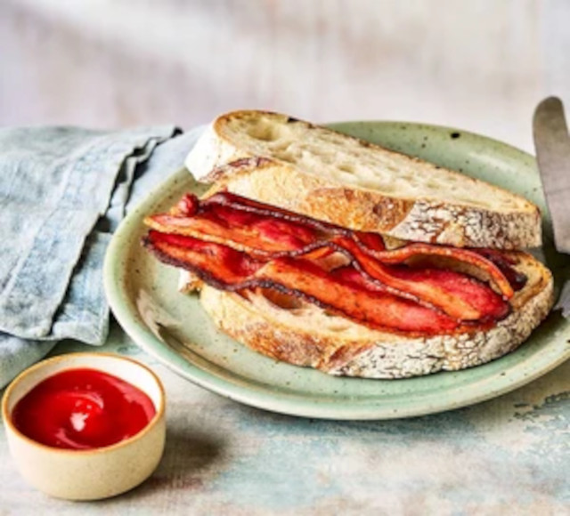

Air fryer bacon

Description
Cook bacon in an air fryer to achieve a crispy texture with less fat.
The perfect bacon sandwich starts here
Ingredients
6 rashers streaky bacon, or 3 rashers back bacon
Steps
- Lay the bacon in a single layer in the base of an air fryer
be sure the layers aren't overlapping.
The size of the air fryer basket will determine how many rashers you
can cook at one time.
- Set the air fryer to 200C and cook streaky bacon rashers for 6-10 mins
-just-cooked bacon will take 6 mins,
but crispier bacon will take 9-10 mins.
Cook back bacon rashers for 4-8 mins, depending on your preference.
If you are cooking in batches, remember that the second batch will usually
be quicker as the air fryer has heated up.
- Remove the bacon using tongs and put on kitchen paper to drain before serving.